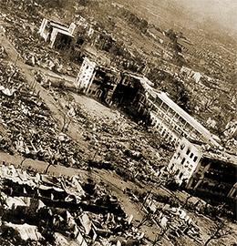

|
j
a v a s c r i p t |
Pg.3/3
February 22, 1945

Philippine Womens University
and Masonic Temple A little hospital at the Philippine Women's University was set up and kept going throughout the battle by one George Archangelesky and Serge Popoff (Russians), plus nurses Dugenia, Vasquez and Ruiz aided by a Miss Holebas. The Russians eventually contacted a Major Carlyle, who withheld fire for one hour while they returned to evacuate the civilians. I asked George if he saw any atrocities being committed. "No, but everyone says...." There was plenty of looting though. They too took food and medicines left behind by the Japanese at the Masonic Temple.
Oscar J. Arellano
Ray Johnson lived in Ermita. At the first sign of trouble he ran south to Malate, thereby escaping three additional days of terror. We were in a mess when suddenly, in comes a Filipino guerrillero, the architect Oscar Arellano, and tells us to beat it. The Americans will hold up fire for just several minutes, and we had to get out in that time. 'Listen Buddy,' I told him, 'all we need is 15 seconds but first we'd like to SEE the Americans.'
|
|
|
|
|